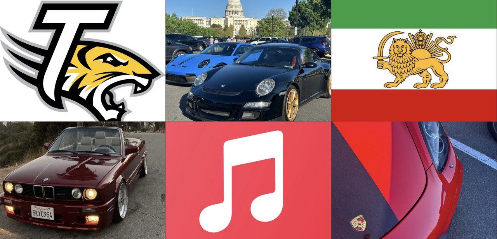

About Me
Hi there!
I'm Parnian, currently studying Information Systems at Towson University. This website is where I share my academic, professional, and personal adventures as a student.
When I'm not in class, graphic design projects keep me busy, where I get to mix creativity with practical design using all sorts of cool software. Music's a huge part of my day—I still listen to songs from my childhood that evoke memories of different stages of my life. Whether I'm running errands, working on assignments, or doing household chores, music is always there. And cars? Well, I can spend hours admiring their designs or geeking out over the latest tech.
Advocacy is another passion of mine. At my old university, I was involved in a group that discussed national flags, and we worked to put up an Iranian Lion and Sun flag to represent Iranian students that don't align with the views of Iran's current government and national flag. Additionally, I love planning events that promote important causes. I was part of the Free Menstrual Product Institutionalization Committee (FMPIC), where I helped organize "Love Your Body Day." This event aims to promote physical, sexual, menstrual, and mental health through education and activities.
Join me as I navigate through student life, pursue my creative interests, and explore career paths in Artificial Intelligence/Machine Learning and Cybersecurity.
Click below to see my current favorite playlist!